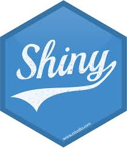
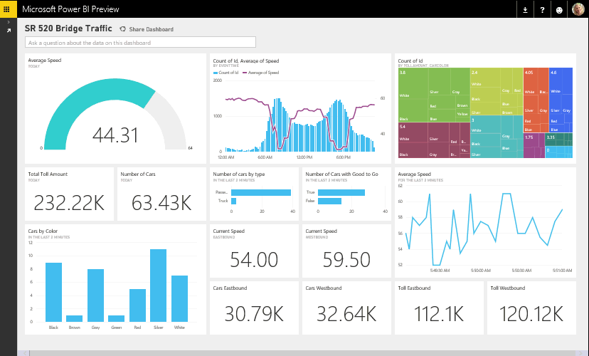
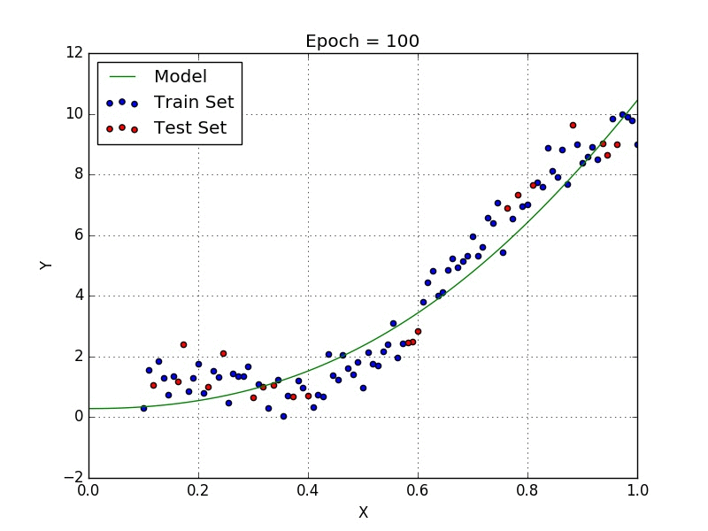

Skills
Programming Languages & Tools
Python
R
GitHub
Docker
Azure ML Studio
Azure DevOps
Power BI
Plotly | Dash

Projects
R Shiny Project Management APP
Participated in the annual R shiny competition where I had built a tool using R shiny for project and task management. The tool lets users to carry out CRUD operations, data analysis, generate visuals and Gantt charts instantly. The UI was built like MS Excel with frequently used operations enabled on web such as pivot, auto fill etc.
Predicting Hospitalization Duration
Scientific Article classification

Github | Python
Auto ML in Power BI
Trainee Performance Evaluation

Github | R
R Shiny App for Interactive Model Building
Awards & Recognitions
- Represented Arcadis in a Global Hackathon named “Code Orange” in Los Angeles, US in Oct’19.
- Won Pinnacle award for performing exceptionally in leading teams / projects – Q1 & Q2 2020